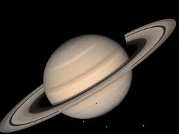

Saturn

Saturn is the least dense planet in the Solar System.
You can see Saturn with your own eyes.
Sometimes the rings disappear.
Saturn has only been visited 4 times by spacecraft.
Saturn has 62 moons.
Back to Index